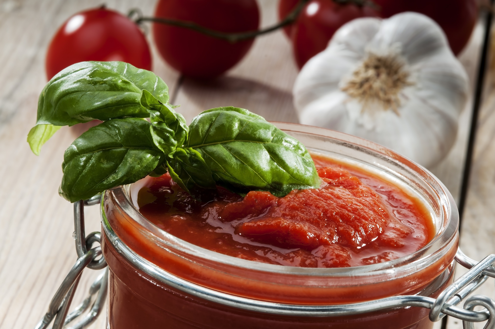

LA SAUCE TOMATE

INGREDIENTS
- tomates : environ 1 kg de tomates mures (fraiches , en conserve ou en purée).
- oignon:1 gros oignon.
- Ail 2 gousses d'ail.
- Huile d'olive: 2 a 3 cuileres a soupe .
- Herbe:du basilic frais, de l'origan ou un bouquet garni.
- assaisonnement: sel et poivre.
ETAPES
- préparation des ingredients
- cuisson des aromates
- Mikotage de la sauce
- Finition de la sauce